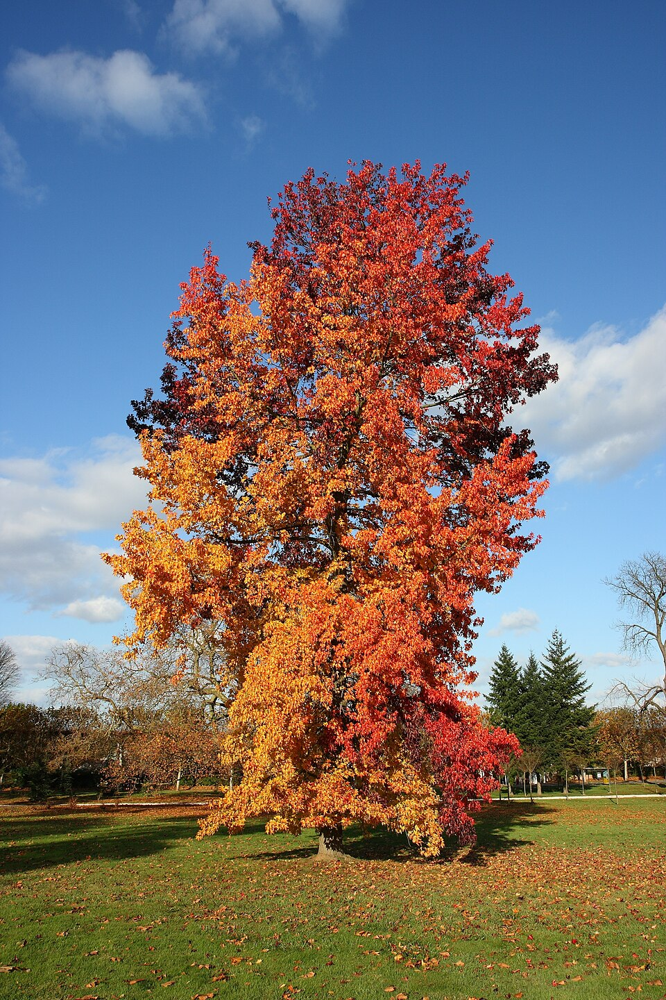

Liquidambar — Sweetgum (Amberboom)
A resin-dripping, star-leaved brawler with a vicious secret weapon — its spiky gumball fruits and sticky amber sap make every step near it a hazard, and its interlocked grain means it won't back down easily.
Combat flavor
Fast growth and moderately hard wood deliver solid, sustained damage output; the spiny fruit clusters could translate to area-denial thorns or a "gumball barrage" ranged attack. Signature ability candidate: Sticky Resin — slows enemy movement speed in melee range.
Real-world facts
Typical / max height18–30 m typical; max ~46 m (Liquidambar styraciflua)
Lifespan150–400 years; typically 150+ under favorable conditions
Wood~590 kg/m³ air-dry density (specific gravity ~0.59); Janka ~850 lbf — moderately hard and heavy with interlocked grain that warps if not carefully dried
Growth speedFast
Ecology / notable traitsProduces fragrant amber-colored resin (storax) used medicinally and in perfumery; spiny gumball seed capsules are a distinctive hazard on the ground; star-shaped leaves turn vivid crimson-purple in autumn; thrives in wet river bottoms and flood plains; one of the most commercially harvested hardwoods in the US South; allelopathic root competition documented
Gallery
